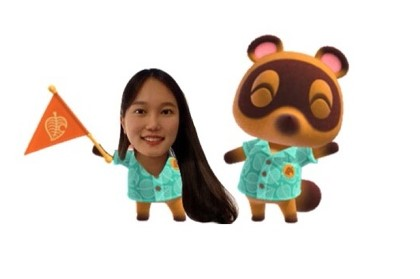
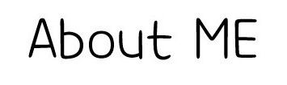

WELCOME TO
HYUNSEO'S
WEBPAGE

다음페이지 부터 좌측 상단의 너구리
를 누르면 이전 페이지로 돌아갑니다 :)
다음페이지 부터 작은나뭇잎
모양이 있는곳은 클릭해주세요:)
 WELCOME TO HYUNSEO'S
WEBPAGE WELCOME TO HYUNSEO'S
WEBPAGE
WELCOME TO HYUNSEO'S
WEBPAGE WELCOME TO HYUNSEO'S
WEBPAGE  를 누르면 이전 페이지로 돌아갑니다 :) 모양이 있는곳은 클릭해주세요:)
를 누르면 이전 페이지로 돌아갑니다 :) 모양이 있는곳은 클릭해주세요:)